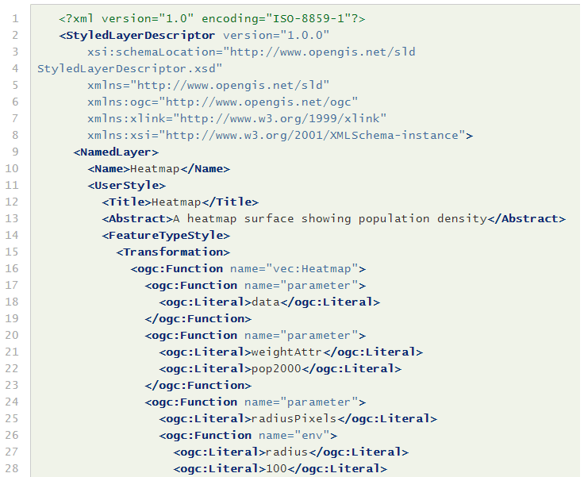
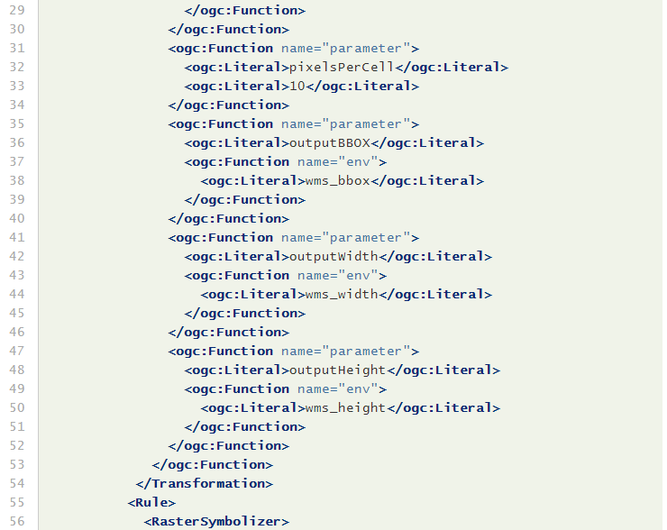
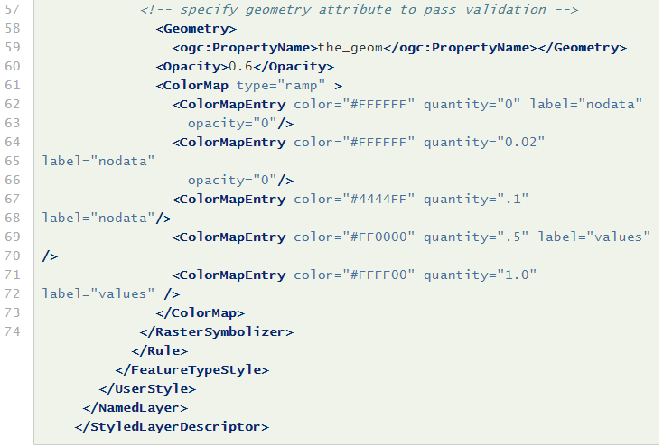
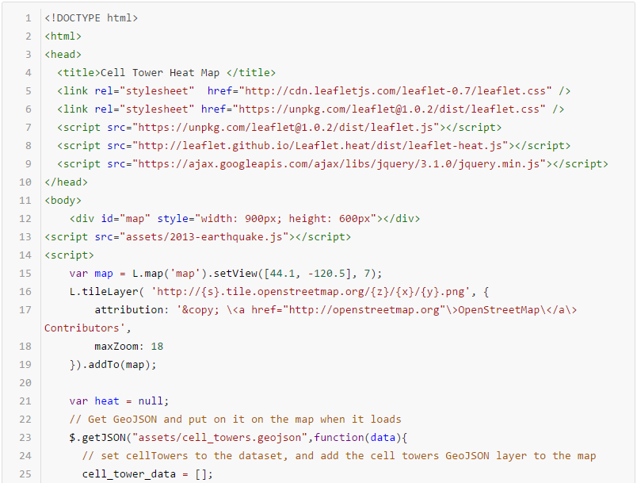
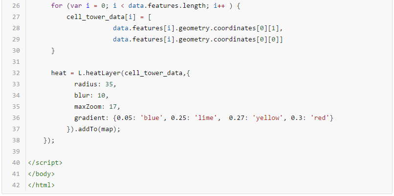

Spring term | Geovisual Analytics 572
By Efrain Noa-Yarasca
Heatmaps are graphical representation of data where each determined zone or area (county, state, pixel) is shaded in proportion to its data.
They can be used to represent population density, diversity, average temperatures, per-capita income, social views, and many other geographically important measurements. For example:population growth map
If the information is given in pixels or cells, a “smooth” heatmap can be obtained like annual average precipitation map

Colors in a heatmap usually go from warm colors such as red, orange to cool colors such as blue, and green .

Tips to obtain a nice heatmap are summarized in four points:
Heatmaps can be designed on several servers such as Geoserver, leaflet.
Rendering Transformations allow processing to be carried out on datasets within the GeoServer rendering pipeline. A typical transformation computes a derived or aggregated result from the input data, allowing various useful visualization effects to be obtained. Transformations may transform data from one format into another (i.e vector to raster or vice-versa), to provide an appropriate format for display
Rendering Transformations are invoked by adding the element to a element in an SLD document. This element specifies the name of the transformation process, and usually includes parameter values controlling the operation of the transformation read more.
gs:Heatmap is a Vector-to-Raster rendering transformation which generates a heatmap surface from weighted point data. The following SLD invokes a Heatmap rendering transformation on a featuretype with point geometries. The output is styled using a color ramp across the output data value range 0 to 1, read more.
  Key aspects of the SLD are:
This transformation styles a layer to produce a heatmap surface for the data in the requested map extent, as shown in the image below. (The map image also shows the original input data points styled by another SLD, as well as a base map layer.)

Constructs a heatmap layer given an array of points and an object with the following options:
Each point in the input array can be either an array like [50.5, 30.5, 0.5], or a Leaflet LatLng object.
Optional third argument in each LatLng point (altitude) represents point intensity. Unless max option is specified, intensity should range between 0.0 and 1.0.
By using this Heatmap plugin for leaflet, a heatmap of cell towers in Oregon was created. Pay attention to how to link in the leaflet heat plugin, and how to use the heatlayer.
 